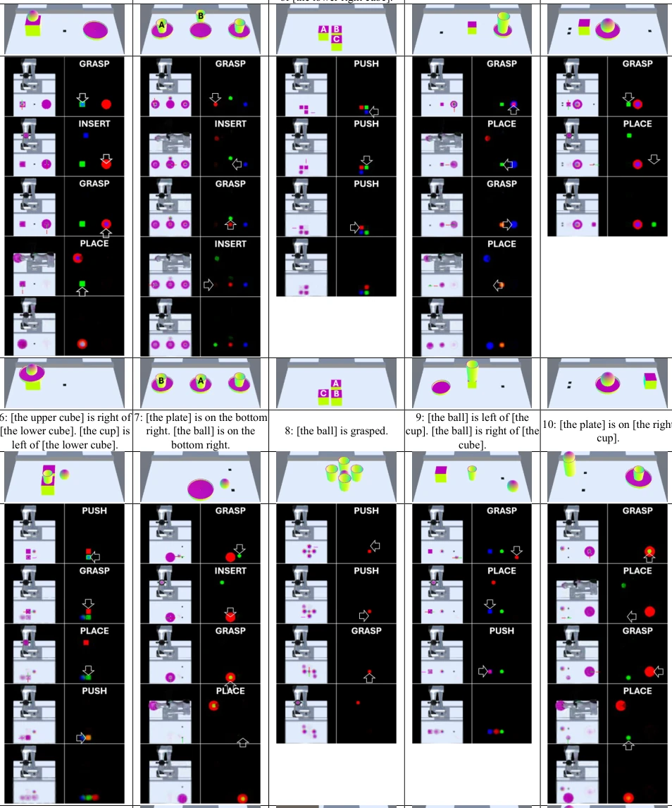
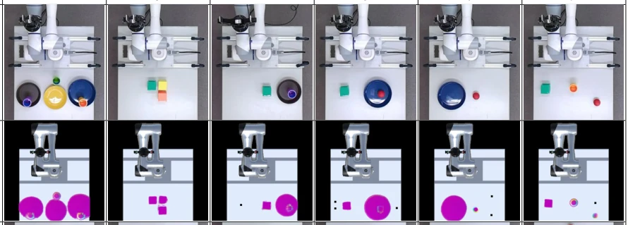

EN
← 返回 ← Back
Affordance-Based Manipulation Planning with Text Goals and Sim-to-Real Generalisation via Real-to-Sim Image Conversion
Solvi Arnold, Rin Karashima, Tadashi Adachi, Takafumi Mochizuki, Kimitoshi Yamazakiabs pdf
论文点评 Review 这篇论文给 affordance 规划加了文本接口和 Sim-to-Real 补丁，算是给老酒装了新瓶子。作者没搞端到端 VLA，而是坚持用“感知 - 预测 - 规划”的模块化架构，这在当前大模型风潮下显得有点“复古”，但胜在可解释性强。亮点在于用 ControlNet 做风格迁移解决域差异，以及用 mask 通道跟踪被遮挡物体，这点比纯视觉规划更鲁棒。槽点在于 GIM 依赖 SAM 半自动初始化，算不算完全自主？而且规划深度受限，遇到复杂遮挡预测容易模糊。整体是工程集成的大胜利，理论创新略显保守。
—
研究动机 Motivation 传统符号规划难以捕捉物理细节 [1]，而 LLM 依赖精确符号描述，现实中难获取。现有 affordance 方法 [2] 虽能预测效果，但目标需图像定义，且假设物体已知，无法处理遮挡或新形状。[13] 虽结合语言，但侧重直接动作指令而非结果目标。本文旨在解决：1) 文本目标定义；2) 未知物体形状泛化；3) 遮挡下的对象跟踪；4) 仿真到真实的域差异。核心痛点在于如何让机器人像人一样“想象”未来状态并匹配文本意图，而非死记硬背规则。
—
方法 Method 系统含五大模块：GIM 将文本转为标准化目标并生成对象 mask 通道（RGBDMMM）；ARM 基于 YOLOv4 识别 affordance 位姿；EPM 是核心，采用双视角（robot view + table view）预测状态变化，利用正交投影和坐标变换保持位置不变性，通过记忆迹保留延迟效应；GMM 基于 CLIP 的多模态网络评估预测状态与文本的一致性；ICM 负责 Sim-to-Real，用 Swin-Unet 将真实图像转为仿真风格。规划时通过剪枝减少计算，选择匹配度最高的动作序列。EPM 的 dual-view 设计巧妙解决了绝对位置无关性，ICM 利用 Stable Diffusion + ControlNet 生成训练数据，避免了真实数据收集。
—
实验 Experiments 在 Unity 仿真和物理 UR5 上测试。仿真 10 个任务，涵盖堆叠、遮挡、相对位置等。ARM 准确率超 90%，GMM 达 98%。ICM 在合成数据上 SSIM 达 0.98。硬件实验展示了 ICM 的有效性，能将真实相机视角转为仿真风格供规划器使用。发现推物体时预测模糊，且规划器能处理部分遮挡。消融显示 mask 通道对遮挡跟踪至关重要。整体证明了模块化架构在复杂任务中的可行性，但预测精度在复杂交互下仍有提升空间。
—

Fig. 9. Planning results for simulation experiments. In each plan, states after the first are system-generated predictions. Depth channel omitted. Right-side column of each plan shows object mask channels (colourised to RGB to improve distinguishability). See text for details. 
Fig. 10. Results of hardware experiments. Depth channel omitted. The second row shows initial states converted to sim-style using the ICM.